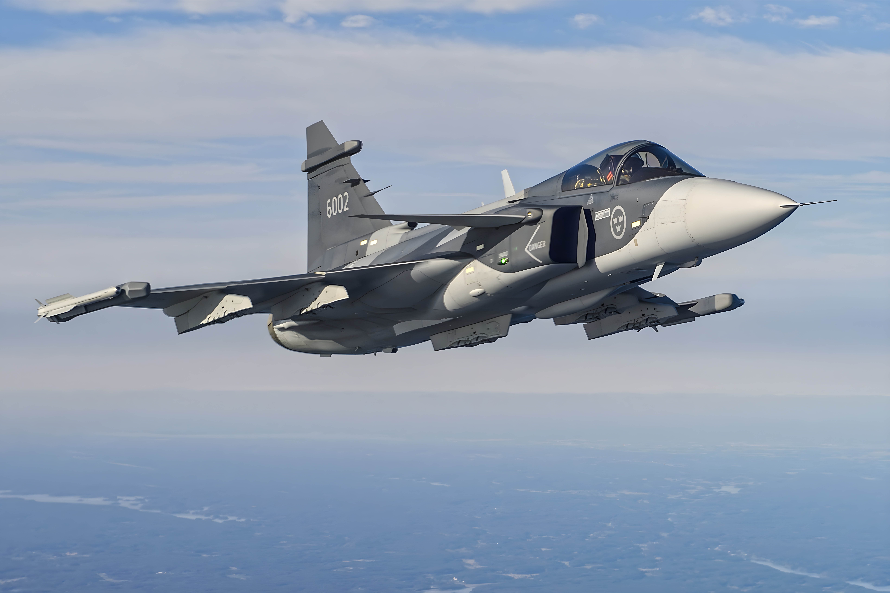
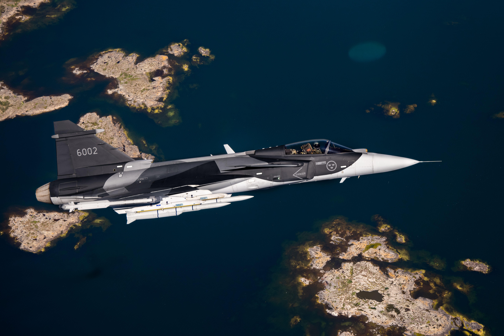
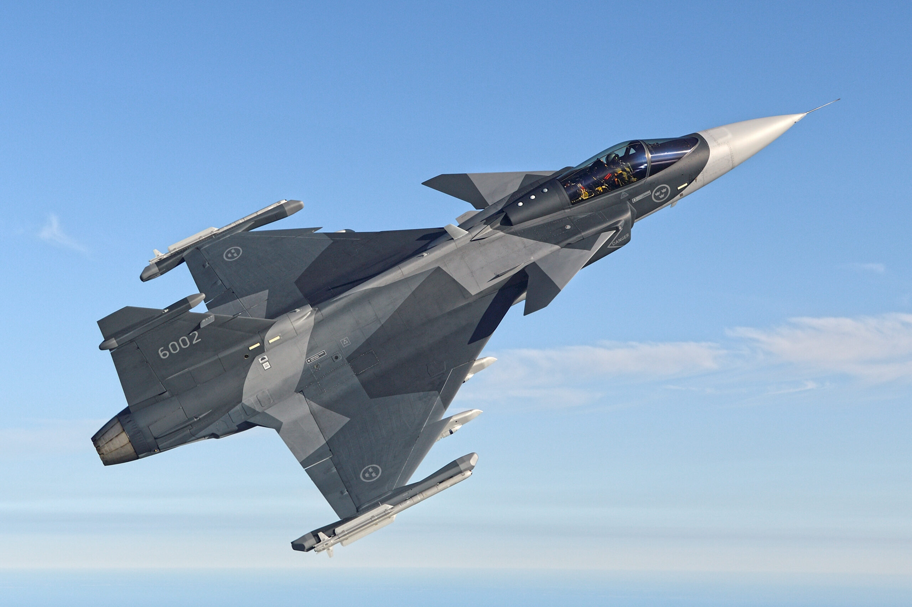

Az új repülőgép újratervezett testében jóval erősebb hajtómű van (mintegy 2,5 tonnával nagyobb a megengedett felszállósúly), a plusz teherbírást pedig főleg a több üzemanyag és fegyver cipelése "viszi el". Szintén érdekes, hogy a gép futóműrendszerét is áttervezték: az orrfutómű teherbírása valószínűleg csökkent azzal, hogy kétkerekesről egykerekesre váltottak, és a segédfutóművek sem a gép törzsébe húzódnak vissza, mint korábban, hanem a szárnyak tövébe (bár ez utóbbira szintén inkább az üzemanyag-kapacitás növelése miatt volt szükség). A Gripen E fegyverzete is bővült: az egyik újdonság az SDB (Small Diameter Bomb) bomba, amely kioldás után kinyíló szárnyaival akár száz kilométert repülhet becsapódás előtt. A másik a Meteor nevű levegő-levegő rakéta. Bár a Gripen E változata 40 százalékkal több üzemanyagot vihet magával, mint a korábbi modellek. Egyes értesülések szerint az izraeli SPICE bombák is bevethetőek az új típusról.
Az új SELEX Raven radar főelőnye, hogy a kb. 1000 sugárzó elemet tartalmazó AESA antenna egy ferde, forgatható lemezre (ún. swashplate) van felépítve, így a radarnyalábot az elektronikus sugár-eltérítés határán túlra is ki lehet téríteni – vagyis a RAVEN radar azonos hatásfokkal alkalmazható a földi és légi célok elleni tevékenységben. Mivel a SELEX cég szállítja a Gripen-E infravörös célkereső (IRST) "gömbjét" is, a két felderítő eszköz összehangolása probléma-mentesnek ígérkezik a következő generációs svéd vadászbombázó repülőgépen. A Raven radar megoldásának hátrányai a mozgó mechanikus alkatrészek miatt megnövekvő karbantartási igény és a csökkenő megbízhatóság, továbbá a forgórész okozta tömegnövekedés.
A beépített gépágyú (amely a kétüléses változatból hiányzik) mellett a fegyverzet nyolc fegyverfelfüggesztő csomóponton helyezhető el.
1: Teherbírása 110 kg. A szárny törővégein lévő indítósínekre csak légi közelharc-rakéták (AIM–9 Sidewinder, és a jövőben az IRIS–T) függeszthetők.
2: Teherbírása 600 kg. A szárny alatti csomópontra rakéták, bombák és az 530 literes póttartályok függeszthetők.
3: Teherbírása 1300 kg. A szárny alatti csomópontra rakéták, robotrepülőgépek, bombák és póttartályok függeszthetők.
4: Teherbírása 250 kg. A jobb oldali levegő-beömlőnyílás alatti csomópontra felderítő- és célmegjelölő konténereket és rádióelektronikai zavarókonténereket lehet függeszteni.
5: Teherbírása 1100 kg. A törzs középvonala alatti csomópontra felderítőkonténerek, bombák és póttartályok függeszthetők.
| Típus | Magyarország használja-e? |
|---|---|
| JAS 39A (együléses) | nem |
| JAS 39B (kétüléses) | nem |
| JAS 39C 12db (együléses) | igen |
| JAS 39D 2db (kétüléses) | igen |
| JAS 39F (együléses) | nem |
| JAS 39E(együléses) | nem |